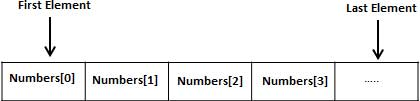
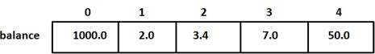

C 语言支持数组数据结构，它可以存储一个固定大小的相同类型元素的顺序集合。数组是用来存储一系列数据，但它往往被认为是一系列相同类型的变量。
数组并非声明一个个单独的变量，比如 iList0、iList1、...、iList99，而是声明一个数组变量，比如 iList，然后使用 iList[0]、iList[1]、...、iList[99] 来代表一个个单独的变量。
数组中的特定元素可以通过索引访问。 所有的数组都是由连续的内存位置组成。最低的地址对应第一个元素，最高的地址对应最后一个元素。
在 C 中要声明一个数组，需要指定元素的类型和元素的数量，如下所示：
type arrayName [ arraySize ];
这叫做一维数组。arraySize 必须是一个大于零的整数常量，type 可以是任意有效的 C 数据类型。
例如，要声明一个类型为 double 的包含 10 个元素的数组 balance，声明语句如下：
double dList[10];
现在 dList 是一个可用的数组，可以容纳 10 个类型为 double 的数字。
在 C 中，您可以逐个初始化数组，也可以使用一个初始化语句，如下所示：
double dList[5] = {1000.0, 2.0, 3.4, 7.0, 50.0};
大括号{ }之间的值的数目不能大于我们在数组声明时在方括号[ ]中指定的元素数目。
如果您省略掉了数组的大小，数组的大小则为初始化时元素的个数。因此，如果：
double dList[] = {1000.0, 2.0, 3.4, 7.0, 50.0};
您将创建一个数组，它与前一个实例中所创建的数组是完全相同的。
下面是一个为数组中某个元素赋值的实例：
dList[4] = 50.0;
上述的语句把数组中第五个元素的值赋为 50.0。所有的数组都是以 0 作为它们第一个元素的索引，也被称为基索引，数组的最后一个索引是数组的总大小减去 1。以下是上面所讨论的数组的的图形表示：
可以使用内存拷贝来初始化数组
for(int i = 0;i＜3;i++){ iArray[i] = 0; } //上面等价于 memset(iArray,0,sizeof(iArray));
int iListA[3] = {1, 2, 3}, iListB[3];
/* 错误，不能把b放到左值 */
iListB = iListA;
/* 数组间赋值之循环方法 */
for (int i = 0; i＜3; i++) {
iListB[i] = iListA[i];
}
/* 数组间赋值之高效方法 */
memcpy(iListB, iListA, sizeof(iListA))
数组元素可以通过数组名称加索引进行访问。元素的索引是放在方括号内，跟在数组名称的后边。例如：
double dSalary = dBalance[10];
上面的语句将把数组中第 10 个元素的值赋给 dSalary 变量。
下面的实例使用了上述的三个概念，即，声明数组、数组赋值、访问数组：
#include <stdio.h>
int main () {
int n[5]; /* n 是一个包含 10 个整数的数组 */
int i,j;
/* 初始化数组元素 */
for ( i = 0; i < 5; i++ ) {
n[ i ] = i + 100; /* 设置元素 i 为 i + 100 */
}
/* 输出数组中每个元素的值 */
for (j = 0; j < 5; j++ ) {
printf("Element[%d] = %d\n", j, n[j] );
}
return 0;
}
//它会产生下列结果：
Element[0] = 100
Element[1] = 101
Element[2] = 102
Element[3] = 103
Element[4] = 104
下面列出了 C 程序员必须清楚的一些与数组相关的重要概念：
| 概念 | 描述 |
|---|---|
| 多维数组 | C 支持多维数组。多维数组最简单的形式是二维数组。 |
| 传递数组给函数 | 您可以通过指定不带索引的数组名称来给函数传递一个指向数组的指针。 |
| 从函数返回数组 | C 允许从函数返回数组。 |
| 指向数组的指针 | 您可以通过指定不带索引的数组名称来生成一个指向数组中第一个元素的指针。 |
C 数组 C 数组 C 语言支持多维数组。多维数组声明的一般形式如下：
type name[size1][size2]...[sizeN];
例如，下面的声明创建了一个三维 5 . 10 . 4 整型数组：
int threedim[5][10][4];
多维数组最简单的形式是二维数组。一个二维数组，在本质上，是一个一维数组的列表。声明一个 x 行 y 列的二维整型数组，形式如下：
type arrayName [ x ][ y ];
其中，type 可以是任意有效的 C 数据类型，arrayName 是一个有效的 C 标识符。一个二维数组可以被认为是一个带有x行和y列的表格。下面是一个二维数组，包含 3 行和 4 列：
因此，数组中的每个元素是使用形式为a[ i , j ]的元素名称来标识的，其中a是数组名称，i和j是唯一标识a中每个元素的下标。
多维数组可以通过在括号内为每行指定值来进行初始化。下面是一个带有 3 行 4 列的数组。
int a[3][4] = {
{0, 1, 2, 3} , /* 初始化索引号为 0 的行 */
{4, 5, 6, 7} , /* 初始化索引号为 1 的行 */
{8, 9, 10, 11} /* 初始化索引号为 2 的行 */
};
内部嵌套的括号是可选的，下面的初始化与上面是等同的：
int a[3][4] = {0,1,2,3,4,5,6,7,8,9,10,11};
二维数组中的元素是通过使用下标（即数组的行索引和列索引）来访问的。例如：
int val = a[2][3];
上面的语句将获取数组中第 3 行第 4 个元素。您可以通过上面的示意图来进行验证。
让我们来看看下面的程序，我们将使用嵌套循环来处理二维数组：
#include <stdio.h>
int main () {
/* 一个带有 5 行 2 列的数组 */
int a[5][2] = { {0,0}, {1,2}, {2,4}, {3,6},{4,8}};
int i, j;
/* 输出数组中每个元素的值 */
for ( i = 0; i < 5; i++ ) {
for ( j = 0; j < 2; j++ ) {
printf("a[%d][%d] = %d\n", i,j, a[i][j] );
}
}
return 0;
}
//它会产生下列结果：
a[0][0]: 0
a[0][1]: 0
a[1][0]: 1
a[1][1]: 2
a[2][0]: 2
a[2][1]: 4
a[3][0]: 3
a[3][1]: 6
a[4][0]: 4
a[4][1]: 8
如上所述，您可以创建任意维度的数组，但是一般情况下，我们创建的数组是一维数组和二维数组。
1 . 请改进实验5中的逆素数问题，要求计算出10-100之间的逆素数，并且从大到小排列显示。
2 . 请编写程序将存放10个整数的数组颠倒顺序。
12 3 94 7 21 5 0 18 33 73
变成
73 33 18 0 5 21 7 94 3 12